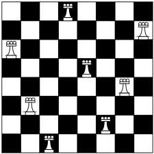
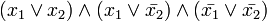

@nanjakkun
Twitter: @nanjakkun
Hatena: id:nanjakkun

N × Nのチェスの盤面にN個のクイーンを
互いに攻撃できない位置に置く問題
※コップ本にも解法が載っています
一つの命題論理式が与えられたときに、
それ全体が真になる変数の割り当てを探索するプログラム

See: http://ja.wikipedia.org/wiki/充足可能性問題
SATソルバを使ってNクイーンを解いた
※SATソルバそのものを作ったわけではない
1. SATソルバが理解できる形に問題を符号化（？）
2. SATソルバに渡して解かせる
3. 返ってきた値を見てわかる形にする
・別のパズル（数独とか）を解く
・SATソルバ本体をScalaで書く